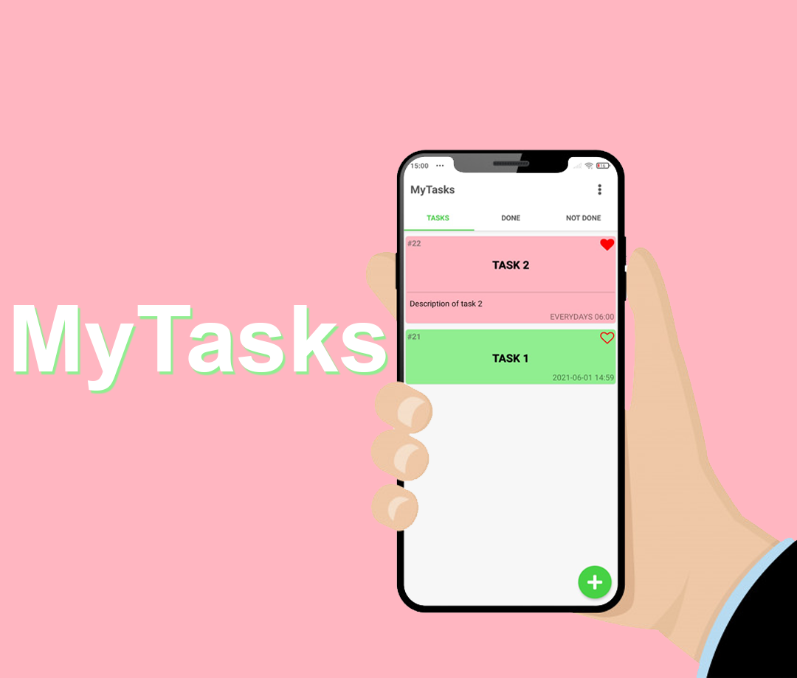

MyTasks
Built using the React Native framework, MyTasks is a mobile app that helps people manage their daily tasks. Features include: add, edit and delete tasks, determine day and time to receive notification of task alert, change color, mark as done or not done, and count time spent on task. In addition, it is possible to switch themes between light and dark, switch languages between English and Brazilian Portuguese and much more.
open on github